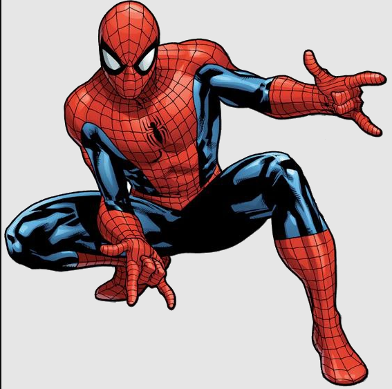
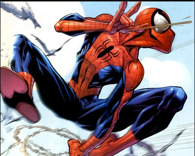
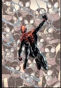

El enmascarado conocido como Spider-Man ha sido visto nuevamente columpiándose por nuestras calles. ¿Héroe o amenaza pública? Exigimos respuestas. A continuación, los datos recopilados por nuestros reporteros.



| Villano | Reporte Policial |
|---|---|
| Duende Verde | Uso de planeador y explosivos |
| Doctor Octopus | Brazos mecánicos adheridos a la espina dorsal |
| Venom | Simbionte alienígena hostil |